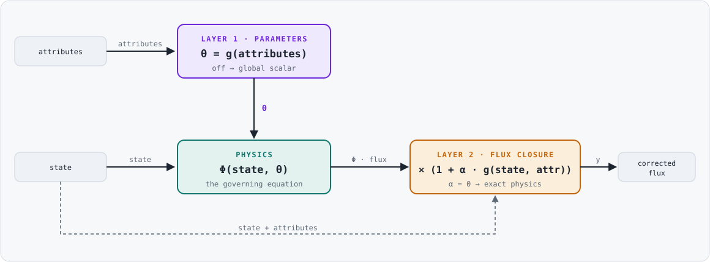
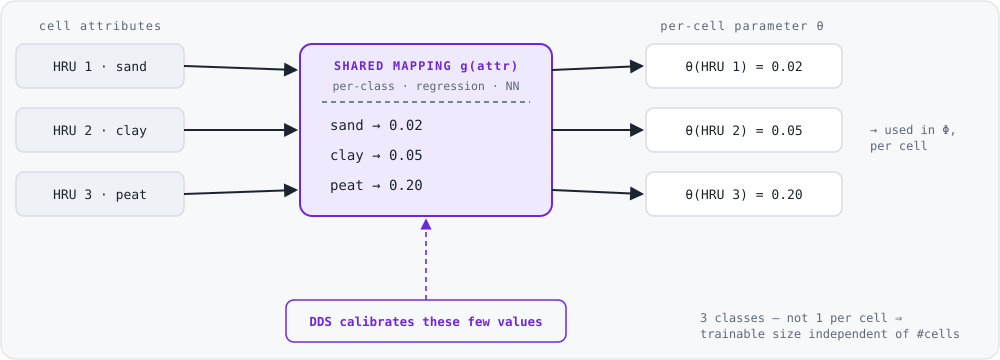
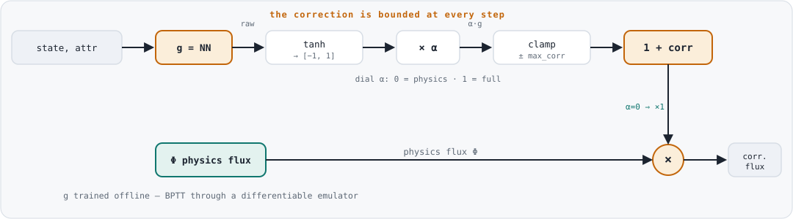

• Physics-first, ML opt-in
• Exact physics recovery (dials off)
• Bounded trainable dimension
• Inference in C++, training in Python
• Layer 0 — per-cell parameters (foundation)
• Layer 1 — learn the parameters
• Layer 2 — learn a bounded flux correction

The foundation both ML layers write into — and useful on its own (set per-HRU values from a soil/land-cover map, no ML needed). A parameter value is read three ways:
"beta_min": 0.0003 // global scalar (default)
"beta_min": {"UNIFORM": 0.0003} // spatial, every cell = v
"beta_min": {"DEFAULT": 0.0003, // spatial, per-cell
"CELLS": [[icmp, ix, iy, iz, v], ...]}Calibrating one value per (cell × parameter) explodes and is ill-posed. A shared mapping has a fixed trainable size, independent of the number of cells — more cells become more constraint, not more unknowns.
Regionalize only effective parameters (mineralization, denitrification tied to soil). Keep universal constants (stoichiometry, Arrhenius) global. Opt-in per parameter.

"beta_min": {
"VALUE": 0.0003,
"ML_REGIONALIZE": {
"rung": "per_class", // or "regression"
"attribute": "soil_class",
"default": 0.0003,
"attribute_table": "openwq_in/attributes.csv",
"mapping_source": "openwq_out/HDF5/...main.h5",
"classes": {"sand":[1e-4,1e-2], "clay":[1e-4,1e-2], "peat":[1e-3,5e-2]}
}
}The mapping runs in Python; the resulting per-cell map is written into the config. No extra C++ — OpenWQ just loads the map (Layer 0).
OpenWQ evaluates the trained network itself at start-up (a hand-rolled Armadillo MLP, no ML runtime) to fill the field, via ML_RUNTIME referencing weights + attributes files.
Corrects the process itself — structural error no parameter can fix (a missing control, a wrong functional form). g is a small network bounded to [−1, 1].
α is the user's dial. At α = 0 the equation is recovered exactly. The total correction is clamped to ±max_correction — it can nudge a flux but never flip its sign or break mass conservation.

tanh, scaled by the dial α, and clamped to ±max_correction before it multiplies the physics flux Φ. It can only reshape a flux within a fixed envelope; at α = 0 the multiplier is exactly 1.
"ML_CLOSURE": {
"ALPHA": 0.3,
"MAX_CORRECTION": 0.5,
"WEIGHTS_FILEPATH": "openwq_in/denit_closure.json" // trained network
}Because the closure sits inside the flux, its gradient runs through the physics. Training uses a differentiable emulator: the flux is re-implemented in differentiable form, the corrected system is unrolled in time, and the trajectory error is back-propagated (BPTT) into the network. Training is offline in Python; OpenWQ does inference only.
All three layers work in a chain (e.g. SUMMA-OpenWQ → mizuRoute-OpenWQ). Regionalized sub-parameters are tagged by model position and routed to the correct model — each with its own attribute table and reach mapping.
With every dial off the result is byte-identical to today's OpenWQ — verified in live runs. Trained networks are evaluated in C++ with no external ML dependency.